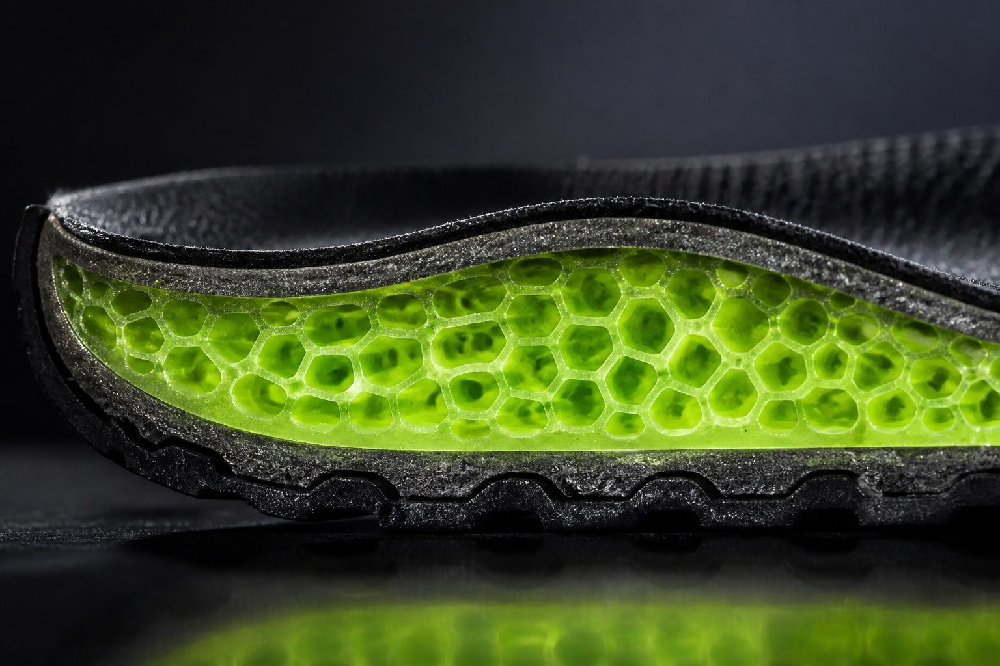
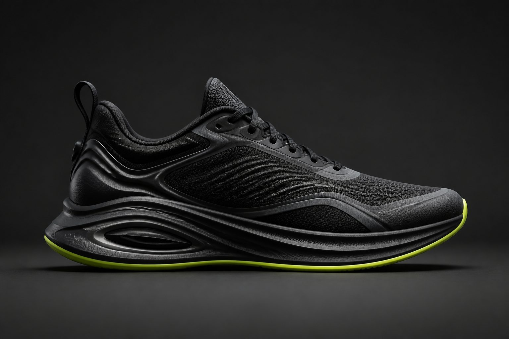
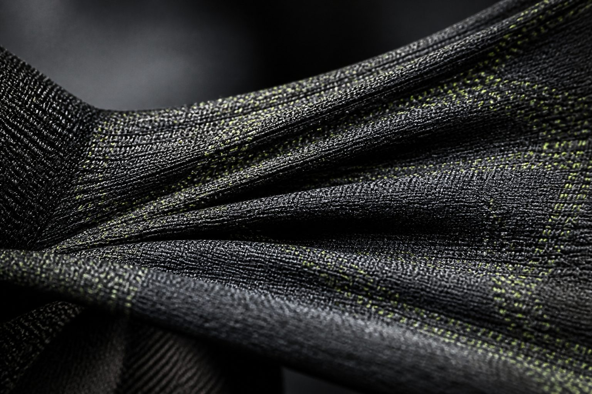
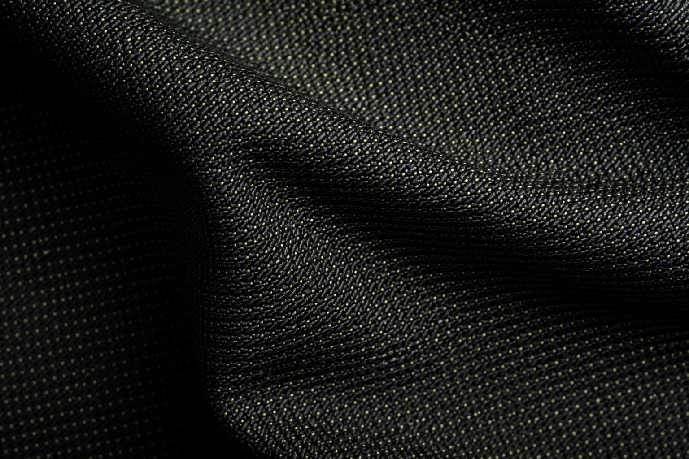
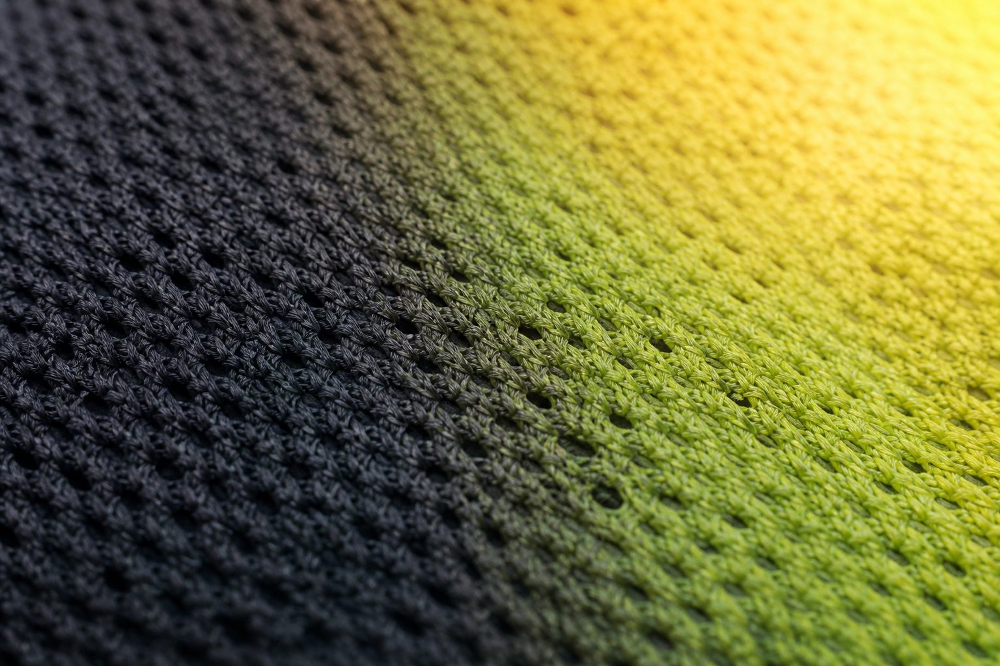

01
PulseFoam Core
Adaptive cushion that stores strike and returns it as forward calm — tuned for wet-night pace.
See it on Vaporstride XUnofficial concept
Concept by Vulcet · Not affiliated with Nike, Inc.
A fashion-forward sports editorial for night pace, material tension, and motion you can feel.
Current drop
Night-race trainer built for wet asphalt and late splits. PulseFoam Core returns energy without shouting for attention.
Inspect system
Movement Edit
Lookbook stills from rain tunnels, fabric strain, and city night circuits.

Performance system
Three fictional technologies invented for this Vulcet experiment — not Nike products.

01
Adaptive cushion that stores strike and returns it as forward calm — tuned for wet-night pace.
See it on Vaporstride X
02
Directional stretch chassis that holds lateral lock while the forefoot speaks freely.
See it on Vaporstride X
03
Climate-responsive surface that softens heat spikes without turning the silhouette loud.
See it on Vaporstride XLines
Stories
Mira Chen runs the empty ring after midnight — not for the clock, for the clarity that only arrives when the city finally exhales.
Read the experiment noteAuthorship
Unofficial concept redesign. Not affiliated with, endorsed by, or connected to Nike, Inc. All product names and technologies on this page are fictional.
© Vulcet Studio · Kinetic Clarity